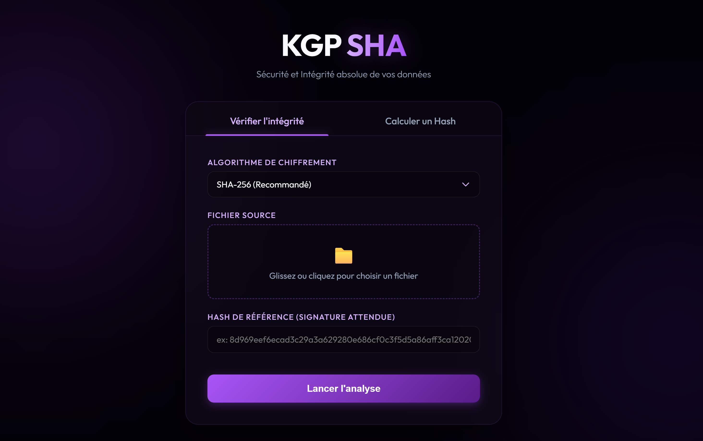

L'outil ultime pour vérifier
l'intégrité de vos fichiers.
Calculez et comparez automatiquement les empreintes SHA-256 et SHA-512. Une application portable, sécurisée et dotée d'une interface web moderne. Sans aucune installation.
Télécharger KGP Checksum (.exe)Pour Windows • Aucune installation requise

Pourquoi utiliser KGP SHA ?
Idéal pour les développeurs, les administrateurs système et tous ceux qui veulent s'assurer qu'un fichier téléchargé n'a pas été corrompu ou piraté.
Vérification Automatique
Fini la comparaison visuelle laborieuse. Collez le hash attendu, chargez votre fichier, et l'outil vous indique instantanément si la correspondance est parfaite ou s'il y a une erreur.
Algorithmes Modernes
Support natif des algorithmes de hachage les plus sécurisés et les plus utilisés de l'industrie : SHA-256 et SHA-512. Rapide même sur de gros fichiers.
100% Portable (Stand-alone)
C'est un simple fichier .exe. Pas besoin d'installation, pas de droits administrateur requis, pas de clés de registre modifiées. Mettez-le sur votre clé USB et utilisez-le partout.
Calcul Local Sécurisé
L'interface s'ouvre dans votre navigateur web, mais tout se passe sur votre ordinateur. Vos fichiers confidentiels ne sont jamais envoyés sur internet.
Info Application Non Signée
L'application n'a pas de certificat numérique coûteux. Il se peut que Windows ou votre antivirus demande une confirmation. Vous pouvez l'ajouter aux exclusions en toute sécurité.
Le Mot du Développeur
J'ai codé cet outil pour mes propres besoins personnels. Maintenant qu'une version compilée fonctionnelle existe, j'ai décidé de la partager simplement avec vous.
Comment ça marche ?
Un processus clair en 3 étapes pour valider l'intégrité de n'importe quel fichier.
Collez l'empreinte (Hash) attendue
Trouvez le code SHA-256 ou SHA-512 fourni par le site web où vous avez téléchargé votre fichier (ex: une image ISO Windows, un installeur de jeu...) et collez-le dans l'application.
Sélectionnez votre fichier
Cliquez sur "Parcourir" ou glissez-déposez le fichier que vous venez de télécharger sur votre ordinateur. KGP Checksum va lire le fichier et générer sa propre empreinte en une fraction de seconde.
Lisez le résultat immédiat
L'application compare automatiquement les deux codes et vous donne le verdict de sécurité instantanément :